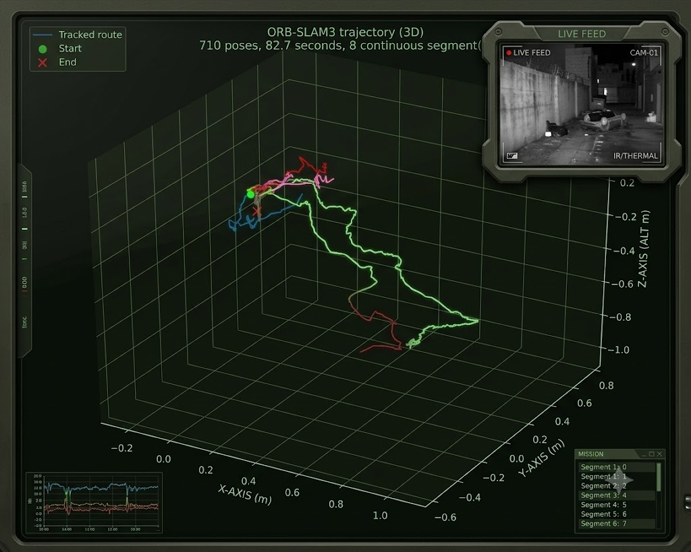
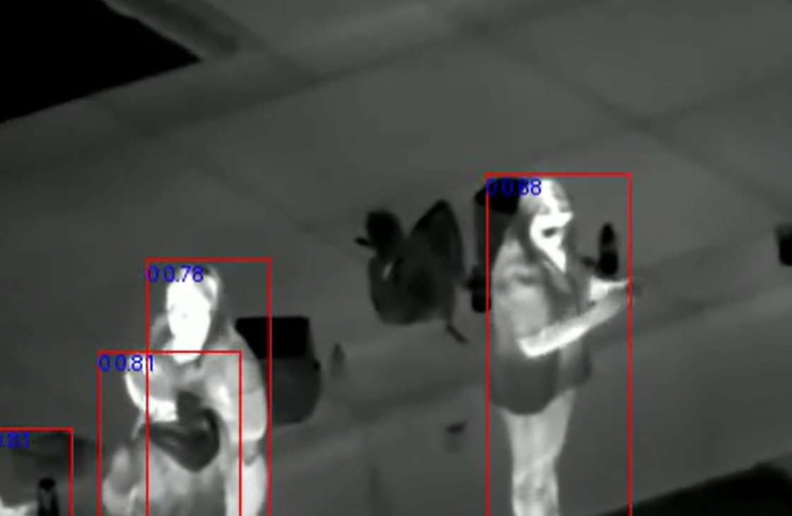
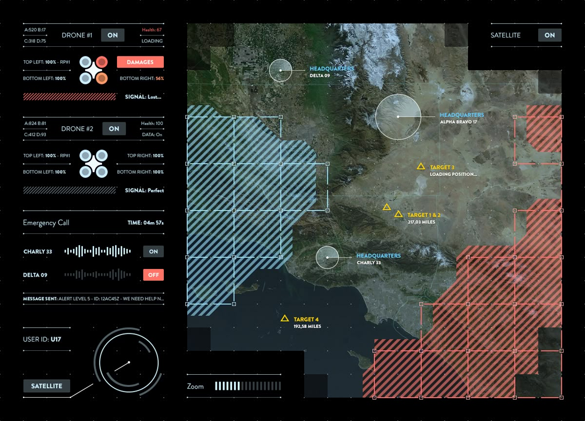
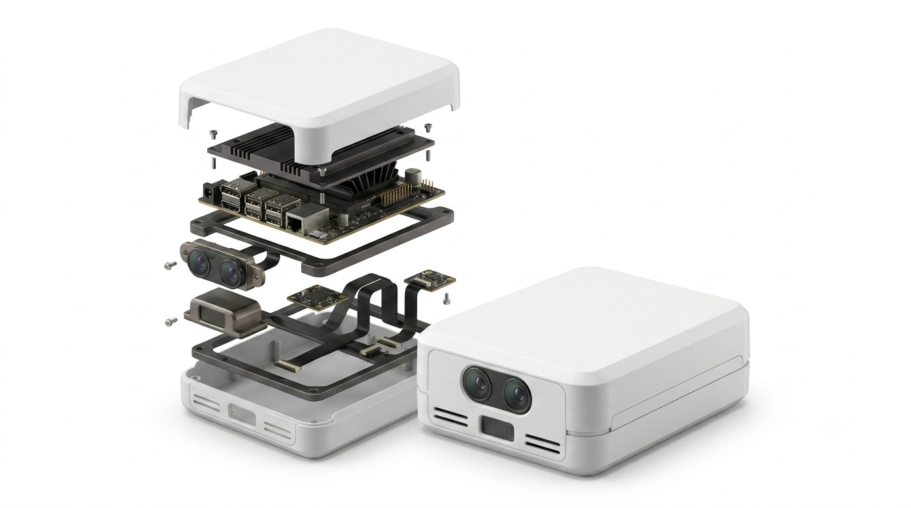

GPS DENIED
No reliable global position to inherit.
Onboard autonomy for drones operating beyond GPS and communications.
A vehicle cannot adapt if it depends on a perfect map, a persistent link, or a remote decision-maker. We are building compact systems that perceive, localize, and respond onboard.
No reliable global position to inherit.
No operator available to close the loop.
Light, texture, terrain, and obstacles move.
Every watt and gram must earn its place.

Localize against the world without inherited coordinates. Track movement from successive camera frames to maintain a local estimate of motion.

Fuse visible and infrared observations into actionable local context: objects, heat signatures, surfaces, clearances, and changes that matter to flight.

Change localization strategy and bounded flight behavior as conditions change without waiting for an external command.

Integrate as a modular autonomy layer across compatible airframes, sensors, and mission systems without rebuilding the stack.
Explore the decision path. Each stage turns raw observation into a bounded flight action inside the vehicle.
Capture synchronized onboard observations at the edge.
A deliberate progression from local navigation to mission-level decisions. Current work is early-stage; milestones describe direction, not deployed capability.
Establish local motion and position from onboard sensing.
Use perception to improve route context and obstacle response.
Shift sensing and localization modes as conditions change.
Make bounded mission choices using local state and objectives.
For technical partnerships, program conversations, and early-stage collaboration.